OpenClaw Directorio de configuración
Toda la configuración, los datos de estado, los espacios de trabajo y las habilidades de OpenClaw (también conocido como Clawdbot) se concentran en el directorio central ~/.openclaw/ (Linux/macOS) o %USERPROFILE%\.openclaw\ (Windows) bajo el directorio principal del usuario.
~/.openclaw/Es el directorio raíz de configuración de todo el sistema, se crea automáticamente al instalar/ejecutaropenclaw onboard 或 openclaw onboard --install-daemonpor primera vez.
~/.openclaw/ ├── openclaw.json # 主配置文件（JSON/JSON5） ├── workspace/ # 你的 AI “灵魂”文件夹（推荐 git 版本控制） │ ├── SOUL.md # 人格设定（语气、风格） │ ├── USER.md # 你的个人信息（让 AI 更懂你） │ ├── MEMORY.md # 长期记忆（手动可编辑） │ ├── IDENTITY.md # Agent 名称、形象 │ ├── AGENTS.md # 多 Agent 路由规则 │ ├── BOOT.md # 启动提示词 │ ├── HEARTBEAT.md # 每日检查清单 │ └── skills/ # 已安装技能（每个技能一个子文件夹） ├── agents/<cid>/ # 每个 Agent 的独立状态 ├── memory/<cid>.sqlite # 向量记忆库 ├── credentials/ # API Key、OAuth（旧版） ├── skills/ # 全局技能包 └── secrets.json # 加密凭证（可选）

Archivo más importante：
openclaw.json: configuración global (modelo, canal, puerto, políticas de seguridad)workspace/todos los archivos bajo.md:Edítelos directamente con VS Code para que surtan efecto en tiempo real！
Comando para ver/modificar la configuración:
openclaw configure # 交互式配置向导 openclaw config file # 显示完整路径 openclaw config get agent.model openclaw config set agent.model "anthropic/claude-3-5-sonnet" openclaw config validate # 校验合法性
| Ruta | Descripción de uso |
|---|---|
~/.openclaw/openclaw.json |
Archivo de configuración principal(¡El más importante!) Almacena la configuración global (modelo, modo de Gateway, dirección de enlace, valores predeterminados de Agents, complementos, etc.). Se puede ver/modificar con el comando: • openclaw config file(Muestra la ruta completa)• openclaw config get <json路径>• openclaw config set <json路径> <值> |
~/.openclaw/workspace/ |
Espacio de trabajo predeterminado(La ubicación del "alma" del Agent) Almacena los siguientes archivos Markdown (se pueden editar directamente para que surtan efecto): • SOUL.md: configuración de personalidad/tono de la IA• USER.md: tus preferencias personales y antecedentes• MEMORY.md: registros de memoria a largo plazo• AGENTS.md: descripción de instrucciones• IDENTITY.md: nombre/tema• BOOT.md: configuración de inicio• HEARTBEAT.md: lista de verificación periódica |
~/.openclaw/agents/<cid>/ |
Directorio de estado de un único agente (Agent) (<cid>es el ID de instancia) |
~/.openclaw/agents/<agentId>/agent/auth-profiles.json |
Claves API y credenciales OAuth(Ubicación recomendada en la nueva versión) La versión anterior puede estar en ~/.openclaw/credentials/ |
~/.openclaw/memory/<cid>.sqlite |
Almacenamiento de índice vectorial (para búsqueda de memoria) |
~/.openclaw/skills/ |
Directorio global de habilidades A través de openclaw skills install 或 clawhub installLos paquetes de habilidades instalados se colocan aquí (cada habilidad es una subcarpeta que contiene SKILL.md) |
~/.openclaw/memory/ |
Archivos relacionados con la memoria a largo plazo (SQLite + incrustaciones vectoriales) |
/tmp/openclaw/*.log |
Registros del servicio de Gateway (para depuración) |
1. Archivo de configuración principal
Ruta: ~/.openclaw/openclaw.json
Descripción:El archivo de configuración principal de OpenClaw, contiene toda la configuración a nivel de sistema.
Elementos de configuración principales:
- gateway- Configuración del servicio de Gateway
mode: modo de Gateway (por ejemplo, "local")port: número de puerto de Gateway (predeterminado 18789)bind: dirección de enlace (predeterminado 127.0.0.1)token: token de acceso, utilizado para la autenticación de la interfaz web
- models- Configuración del modelo de IA
- Configuración del modelo predeterminado
- Información de autenticación de API
- messages- Configuración de procesamiento de mensajes
- Configuración de TTS (texto a voz)
- Configuración del formato de mensajes
Ejemplo de fragmento de configuración:
{
"gateway": {
"mode": "local",
"port": 18789,
"bind": "127.0.0.1",
"token": "c9917c5a066beeb26266d09baed99495e7563b33c771e89a"
}
}
Recomendaciones de operación:
- Después de la primera instalación, se genera automáticamente mediante
openclaw onboardel asistente. - Después de modificar la configuración, es necesario reiniciar el servicio de Gateway para que surta efecto.
- El valor del token se utiliza para acceder a la interfaz web, guárdelo de forma segura.
2. Directorio del espacio de trabajo
Ruta: ~/.openclaw/workspace/
Descripción:El directorio de trabajo predeterminado de OpenClaw; todos los archivos generados por IA, archivos temporales y archivos de salida de las solicitudes del usuario se guardan aquí.
Usos principales:
- Ubicación predeterminada para que el agente de IA lea y escriba archivos
- Almacenamiento de la salida de ejecución de código
- Generación y edición de documentos
- Almacenamiento de datos temporales
Notas sobre permisos:
- Por defecto, la IA solo puede acceder a este directorio y sus subdirectorios
- Si necesita acceder a otras rutas, debe configurar
filesystem-mcphabilidades y otorgar permisos adicionales - Los usuarios de Windows pueden necesitar copiar archivos desde el espacio de trabajo a otras ubicaciones
Sugerencias de uso:
- Limpie periódicamente los archivos temporales innecesarios
- Se recomienda hacer copia de seguridad de las salidas importantes fuera del espacio de trabajo
- Puede crear subdirectorios de proyectos aquí para organizar y gestionar
3. Directorio de estado del agente
Ruta: ~/.openclaw/agents/<cid>/
Descripción:Directorio de almacenamiento del estado y la configuración del agente para cada conversación (Conversation).<cid>es el ID de sesión, cada sesión tiene un espacio de configuración independiente.
Estructura del directorio:
~/.openclaw/agents/<cid>/ ├── agent/ │ ├── auth-profiles.json # 该会话的 OAuth 和 API 密钥 │ └── ... └── ...
Descripción de auth-profiles.json:
- Almacena la información de autenticación de API utilizada por el agente
- Contiene los tokens OAuth de varios servicios
- La nueva versión usa esta ruta, la versión anterior se almacena en
~/.openclaw/credentials/
Aislamiento de datos:
- La información de autenticación de cada sesión es independiente entre sí
- Se pueden configurar diferentes claves API para diferentes sesiones
- Admite la ejecución paralela de múltiples agentes
4. Directorio de credenciales de autenticación (versión anterior)
Ruta: ~/.openclaw/credentials/
Descripción:Ubicación de almacenamiento de credenciales de la versión anterior de OpenClaw.
Notas de migración:
- La nueva versión se ha migrado a
~/.openclaw/agents/<agentId>/agent/auth-profiles.json - Después de que los usuarios de versiones anteriores actualicen, es posible que las credenciales deban reconfigurarse
- Se recomienda usar
openclaw models auth setuppara restablecer.
5. Directorio de almacenamiento de memoria
Ruta: ~/.openclaw/memory/
Descripción:Ubicación de almacenamiento del sistema de memoria persistente de OpenClaw, incluye el índice vectorial y el historial de conversaciones.
Archivos principales:
-
<cid>.sqlite- Base de datos de índice vectorial- Almacena los vectores semánticos de las conversaciones
- Admite la función de búsqueda semántica
- Se utiliza para la recuperación de memoria a largo plazo
-
YYYY-MM-DD.md- Registros de conversación diarios- Archivos Markdown con nombre por fecha
- Registra todo el contenido de las conversaciones del día
- Facilita la revisión y el archivado manual
Funciones de memoria:
- Búsqueda vectorial:Usar
memory search "关键词"para buscar conversaciones históricas - Asociación contextual:Admite la comprensión contextual entre sesiones
- Memoria a largo plazo:El agente "recordará" las preferencias y hábitos del usuario
Recomendaciones de mantenimiento:
- Haga copias de seguridad periódicas del directorio memory
- Las bases de datos grandes pueden afectar el rendimiento, considere archivarlas periódicamente
- Los archivos de registro se pueden utilizar para auditoría y solución de problemas
6. Directorio de habilidades
Ruta: ~/.openclaw/skills/
Descripción:Ubicación de instalación de las habilidades compartidas globalmente (Skills). Las habilidades son complementos que extienden la funcionalidad de OpenClaw.
Gestión de habilidades:
- Instalar habilidad:
npx clawhub install <skill-name> - Listar habilidades:
openclaw skills list - Buscar habilidades:
npx clawhub search <关键词>
Ejemplos de habilidades comunes:
filesystem-mcp- Operaciones con el sistema de archivosgithub- Integración con GitHubnano-pdf- Edición de PDFnotion/obsidian- Sincronización de notasweather- Consulta del climasummarize- Generación de resúmenes de contenido
Ecosistema de habilidades:
- La biblioteca de habilidades de la comunidad ClawHub ofrece más de 500 habilidades
- Admite el desarrollo de habilidades personalizadas
- Las habilidades pueden acceder a API externas y recursos del sistema
Notas de configuración:
- Cada habilidad puede requerir una configuración de clave API separada
- Algunas habilidades dependen de herramientas del sistema (como GitHub CLI)
- Las habilidades exclusivas de macOS no están disponibles en Windows/Linux
7. Directorio de registros de la puerta de enlace
Ruta: /tmp/openclaw/*.log
Descripción:Registros de ejecución del servicio de Gateway, almacenados en el directorio temporal del sistema.
Tipos de registro:
- Registros de inicio/parada de la puerta de enlace (gateway)
- Registros de solicitudes/respuestas de API
- Registros de errores y excepciones
- Información de monitoreo de rendimiento
Gestión de registros:
- Los registros en el directorio temporal pueden eliminarse tras reiniciar el sistema
- Uso
openclaw gateway --verboseSe pueden ver los registros detallados - Al solucionar problemas, primero revise los archivos de registro
Gestión del servicio de puerta de enlace:
openclaw gateway start # 启动网关 openclaw gateway status # 查看状态 openclaw gateway stop # 停止网关
Otros archivos importantes
USER.md
Ruta:Normalmente se encuentra en el área de trabajo o en una ubicación definida por el usuario
Descripción:Archivo de información del usuario, que contiene información personalizada sobre el usuario, ayudando a la IA a comprender mejor las necesidades del usuario.
Ejemplo de contenido:
- Configuración de preferencias del usuario
- Flujos de trabajo habituales
- Información de contexto del proyecto
- Instrucciones personalizadas
Mejores prácticas para la gestión de archivos de configuración
1. Estrategia de copia de seguridad
Copia de seguridad de directorios clave:
# 备份整个配置目录 tar -czf openclaw-backup-$(date +%Y%m%d).tar.gz ~/.openclaw/ # 仅备份核心配置 cp ~/.openclaw/openclaw.json ~/backups/ cp -r ~/.openclaw/memory/ ~/backups/memory/
Frecuencia de copia de seguridad recomendada:
- Archivo de configuración principal: después de cada modificación
- Base de datos de memoria: una vez por semana
- Configuración de habilidades: después de instalar una nueva habilidad
2. Recomendaciones de seguridad
Protección de información sensible:
openclaw.jsonContiene token de puerta de enlace, no debe hacerse públicoauth-profiles.jsonContiene claves de API, requiere protección mediante cifrado- Cambie las claves de API periódicamente
- No envíe archivos de configuración al sistema de control de versiones
Configuración de permisos:
# 确保配置目录仅用户可访问 chmod 700 ~/.openclaw/ chmod 600 ~/.openclaw/openclaw.json chmod 600 ~/.openclaw/agents/*/agent/auth-profiles.json
3. Migración y actualización
Notas sobre actualización de versiones:
- Antes de actualizar, haga una copia de seguridad de todo el
~/.openclaw/directorio - Revise las notas de la versión (release notes) para conocer los cambios de configuración
- Las credenciales de versiones antiguas pueden necesitar migración
Sincronización entre dispositivos:
- Se pueden sincronizar los archivos de configuración para lograr consistencia en múltiples dispositivos
- Preste atención a las diferencias de ruta (Windows vs Unix)
- Se recomienda configurar la información sensible de forma independiente
4. Solución de problemas
Diagnóstico de problemas de configuración:
# 检查配置文件语法 cat ~/.openclaw/openclaw.json | json_pp # 深度检查 openclaw doctor --deep # 查看网关状态 openclaw gateway status
Problemas comunes:
- Fallo de autenticación:Ejecute
openclaw models auth setupReconfigure - La puerta de enlace no puede iniciarse:Verifique la ocupación del puerto, revise los archivos de registro
- Las habilidades no están disponibles:Confirme que las dependencias de la habilidad estén instaladas, revise las claves de API
Configuración de variables de entorno
OpenClaw admite configuración mediante variables de entorno:
# API 密钥环境变量 export ANTHROPIC_API_KEY="your-key-here" export OPENAI_API_KEY="your-key-here" export DEEPSEEK_API_KEY="your-key-here" # 自定义配置目录 export OPENCLAW_HOME="~/custom-path/.openclaw"
Prioridad de las variables de entorno:
- La clave de API en las variables de entorno se detecta automáticamente por el asistente de incorporación (onboard)
- Puede sobrescribir los valores predeterminados en el archivo de configuración
- Adecuado para entornos CI/CD y despliegues en contenedores
Configuración de red e implementación
Implementación local
Configuración predeterminada:
- Dirección de enlace: 127.0.0.1 (acceso solo local)
- Puerto de la puerta de enlace: 18789
Método de acceso:
http://127.0.0.1:18789/#token=<your-token>
Implementación en la nube
OpenClaw admite el despliegue en servidores en la nube:
Plataformas compatibles:
- Alibaba Cloud:https://www.aliyun.com/activity/ecs/clawdbot
- Tencent Cloud:https://cloud.tencent.com/developer/article/2624973
- 1Panel
- Contenedor Docker
Características de configuración en la nube:
- Se debe configurar el permiso de acceso a la red pública
- Puede ser necesario configurar reglas de firewall
- Admite vinculación de dominios y certificados SSL
Configuración de plataformas de integración
OpenClaw admite múltiples plataformas de mensajería instantánea:
Plataformas compatibles
- En el extranjero: WhatsApp, Telegram, Discord, Slack, iMessage
- En China:Feishu, DingTalk
Ubicación de configuración
La configuración del canal de chat se almacena enopenclaw.jsone incluye:
- Tipo de canal (Slack/Feishu, etc.)
- Token de autenticación
- Lista blanca/negra de canales
- Modo de respuesta (DM/chat grupal)
Gestión de configuración
# 添加新渠道 openclaw channels add # 列出已配置渠道 openclaw channels list # 配对管理 openclaw pairing list openclaw pairing approve <platform> <code>Otras extensiones
Haz clic para compartir notas
<p style="font-size:14px;">¡La nota debe ser una extensión del contenido de este artículo!</p><br> <p style="font-size:12px;"><a href="../tougao.html" target="_blank">Envío de artículos, haz clic aquí</a></p> <p style="font-size:14px;"><a href="../w3cnote/runoob-user-test-intro.html" target="_blank">Cómo obtener el código de invitación de registro</a></p> <h3 class="text-muted"><i class="fa fa-info-circle" aria-hidden="true"></i> Antes de compartir una nota, debe <a href=";.html" class="runoob-pop">iniciar sesión</a>.</h3> <p><a href="../w3cnote/runoob-user-test-intro.html" target="_blank">Cómo obtener el código de invitación de registro</a></p>